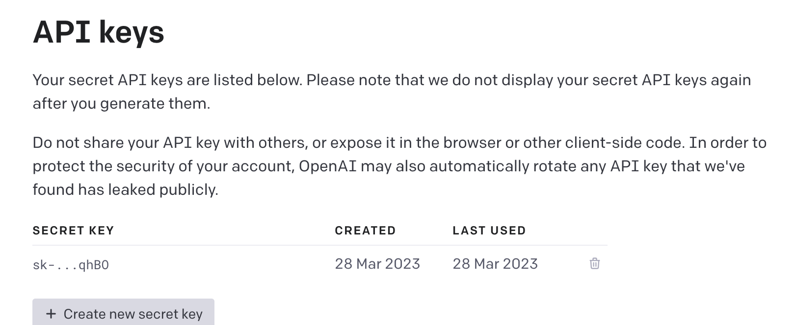

Getting Started Guide
You can either get started with K8sGPT in your own environment, the details are provided below or you can use our Playground example on Killercoda.
Tip
Please only use K8sGPT on environments where you are authorized to modify Kubernetes resources.
Prerequisites
- Ensure
k8sgptis installed correctly on your environment by following the installation. - You need to be connected to any Kubernetes cluster. Below is the documentation for setting up a new KinD Kubernetes cluster. However, make sure that kubectl is already installed.
Setting up a Kubernetes cluster
To give k8sgpt a try, set up a basic Kubernetes cluster, such as KinD or Minikube (if you are not connected to any other cluster).
-
The KinD documentation provides several installation options to set up a local cluster with two commands.
-
The Minikube documentation covers different Operating Systems and Architectures to set up a local Kubernetes cluster running on a Container or Virtual Machine.
Creating a KinD Kubernetes Cluster
Install KinD first:
brew install kind
Create a new Kubernetes cluster:
kind create cluster --name k8sgpt-demo
Using K8sGPT
You can view the different command options through
k8sgpt --help
Kubernetes debugging powered by AI
Usage:
k8sgpt [command]
Available Commands:
analyze This command will find problems within your Kubernetes cluster
auth Authenticate with your chosen backend
cache For working with the cache the results of an analysis
completion Generate the autocompletion script for the specified shell
custom-analyzer Manage a custom analyzer
dump Creates a dumpfile for debugging issues with K8sGPT
filters Manage filters for analyzing Kubernetes resources
generate Generate Key for your chosen backend (opens browser)
help Help about any command
integration Integrate another tool into K8sGPT
serve Runs k8sgpt as a server
version Print the version number of k8sgpt
Flags:
--config string Default config file (default is $HOME/.k8sgpt.yaml)
-h, --help help for k8sgpt
--kubeconfig string Path to a kubeconfig. Only required if out-of-cluster.
--kubecontext string Kubernetes context to use. Only required if out-of-cluster.
Use "k8sgpt [command] --help" for more information about a command.
Authenticate with OpenAI
First, you will need to authenticate with your chosen backend. The backend is the AI provider such as OpenAI's ChatGPT.
Ensure that you have created an account with OpenAI.
Next, generate a token from the backend:
k8sgpt generate
This will provide you with a URL to generate a token, follow the URL from the command line to your browser to then generate the token.

Copy the token for the next step.
Then, authenticate with the following command:
k8sgpt auth add --backend openai --model gpt-4o-mini
This will request the token that has just been generated. Paste the token into the command line.
You should then see the following success message:
Enter openai Key: openai added to the AI backend provider list
Analyze your cluster
Ensure that you are connected the correct Kubernetes cluster, for this initial example is preferable to use KinD or Minikube as discussed earlier.
kubectl config current-context
kubectl get nodes
We will now create a new "broken Pod", simply create a new YAML file named broken-pod.yml with the following contents:
apiVersion: v1
kind: Pod
metadata:
name: broken-pod
namespace: default
spec:
containers:
- name: broken-pod
image: nginx:1.a.b.c
livenessProbe:
httpGet:
path: /
port: 81
initialDelaySeconds: 3
periodSeconds: 3
You might have noticed, this Pod has a wrong image tag. This is ok for this example, we simply want to have an issue in our cluster. The simply run:
kubectl apply -f broken-pod.yml
This will create the "broken Pod" in the cluster. You can verify this by running:
kubectl get pods
NAME READY STATUS RESTARTS AGE
broken-pod 0/1 ErrImagePull 0 5s
Now, you can go ahead and analyse your cluster:
k8sgpt analyze
Executing this command will generate a list of issues present in your Kubernetes cluster. In the case of our example, a message should be displayed highlighting the problem related to the container image.
0 default/broken-pod(broken-pod)
- Error: Back-off pulling image "nginx:1.a.b.c"
Info
To become acquainted with the available flags supported by the analyse command, type k8sgpt analyse -h for more information. This will provide you with a comprehensive list of all the flags that can be utilized.
For a more engaging experience and a better understanding of the capabilities of k8sgpt and LLMs (Large Language Models), run the following command:
k8sgpt analyse --explain
Congratulations! you have successfully created a local kubernetes cluster, deployed a "broken Pod" and analyzed it using k8sgpt.